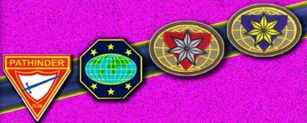

Source: GC SYL CURRICULUM
The Adventist Youth Ministries Curriculum was divided into two areas: the Junior Youth and the Senior Youth.
The Junior Youth focuses on training the young and developing individuals. They are those who still needs guidance, care and constant supervision because they can't still survive on their own.
The Senior Youth focuses on training those individual who already knows how to guide and influence their fellow youth. They are those individuals who already have the clear understanding of the world around them.
The Junior Youth

In this website, we will be focusing on the Junior Youth since we are in a High School setting.
The same with the Senior Youth, the Junior Youth is also a series of training to shape the different aspects of the individual and to make him/her more efficient in serving others while bringing the Gospel of Christ.
The picture with the pink background shows the different levels of training in the area of the Junior Youth👉.
We have the Adventurers, Pathfinders, Master Guide, Pathfinder Leadership Award (PLA),and the Advanced Pathfinder Leadership Award (APLA) or the Pathfinder Instructor Award (PIA).
However, in the recent curriculum of the General Conference Youth Department, the PLA and the APLA was replaced with Club Ministries Training (CMT).
PATHFINDER CURRICULUM

MASTER GUIDE CURRICULUM

The Master Guide is the expert, the advisor, the promoter for Adventurers and Pathfinders. As such, MG is NOT a Pathfinder program, it is a Youth Ministry Leadership Program.
- Master Guide Administrative Manual NAD©2019
- Master Guide Manual Version 0.3 ©2013
- Master Guide Manual ©2022
- Master Report Card ©2022
- Uniform Policy ©2016
![[ Requirements ]](images/1Trail Friend Req.jpg){kind=link}
![[ Requirements ]](images/2Frontier Companion Req.jpg){kind=link}
![[ Requirements ]](images/3Range Explorer Req.jpg){kind=link}
![[ Requirements ]](images/4Wilderness Ranger Req.jpg){kind=link}